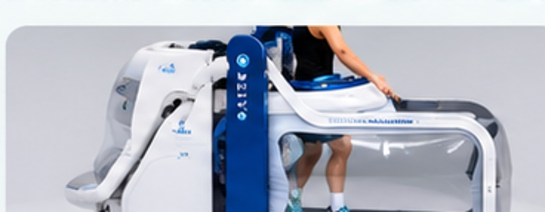
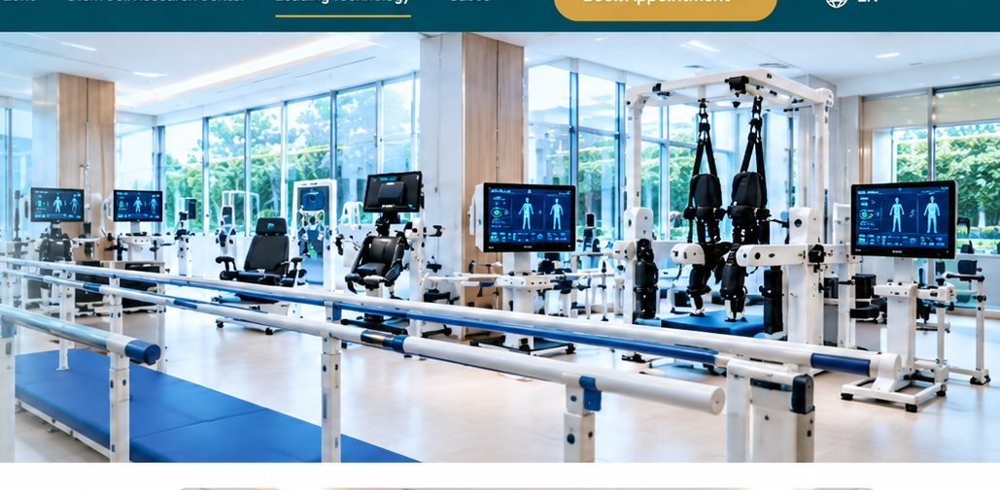
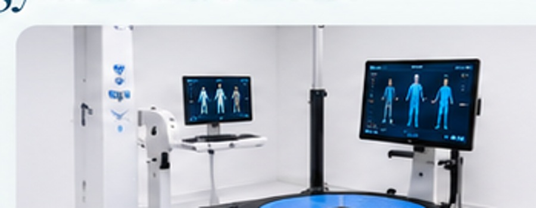
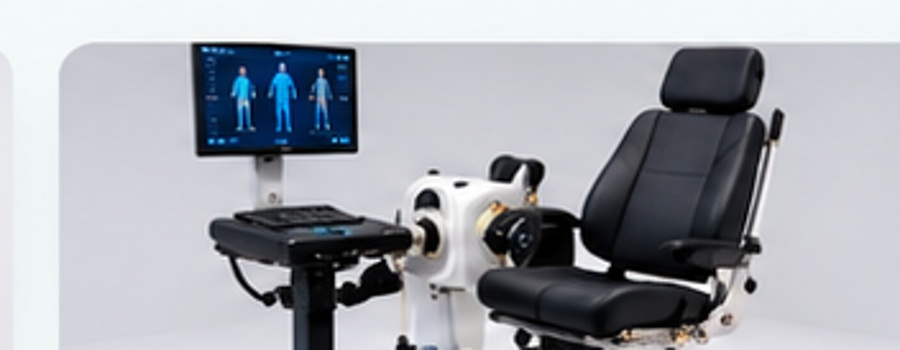
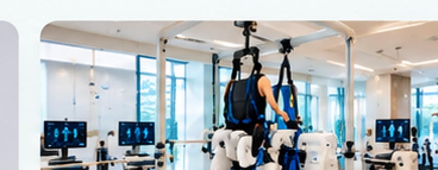

Anti-Gravity Treadmill
Controlled gait and mobility training with reduced weight-bearing support.
Advanced treatment, assessment and rehabilitation technologies supporting modern medical care and structured recovery.
The medical technology resources presents a broad rehabilitation platform using modern assessment, mobility and recovery equipment.

Technology is used across assessment, mobility training and recovery to support individualized rehabilitation programs.

Controlled gait and mobility training with reduced weight-bearing support.

Structured balance, stability and functional-mobility assessment and training.

Objective strength and joint-function assessment within rehabilitation programs.

Assisted walking and mobility training with controlled support during recovery.
Upper- and lower-limb rehabilitation robots support structured recovery programs.
Water-based rehabilitation facilities support mobility and therapeutic exercise programs.
A multi-seat hyperbaric oxygen chamber is presented as part of the rehabilitation facilities.
Specialized traction equipment forms part of the wider rehabilitation platform.
Modern imaging and diagnostic infrastructure supports evaluation and clinical decision-making.
The supplied material references PET-CT, TomoTherapy and advanced LINAC capabilities in oncology.
Contact our team for hospital coordination and medical consultation support.